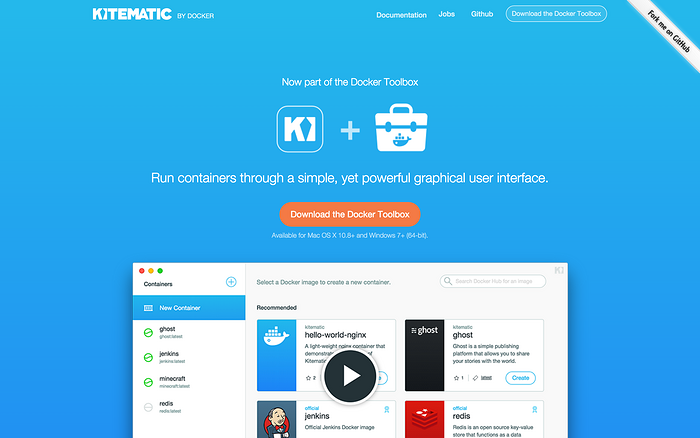

<!-- 轮播图 -->
	
		<div class="col-md-10 col-md-offset-2">
			<div class="row">

				<div id="myCarousel" class="carousel slide">
   				<!-- 轮播（Carousel）指标 -->
   				<ol class="carousel-indicators">
   				   <li data-target="#myCarousel" data-slide-to="0" class="active"></li>
   				   <li data-target="#myCarousel" data-slide-to="1"></li>
   				   <li data-target="#myCarousel" data-slide-to="2"></li>
   				</ol>  
   				<!-- 轮播（Carousel）项目 -->
   				<div class="carousel-inner">
   				   <div class="item active">
   				      
   				      <div class="carousel-caption">标题 1</div>
   				   </div>
   				   <div class="item">
   				      
   				      <div class="carousel-caption">标题 2</div>
   				   </div>
   				   <div class="item">
   				      
   				      <div class="carousel-caption">标题 3</div>
   				   </div>
   				</div>
   				<!-- 轮播（Carousel）导航 -->
   				<a class="carousel-control left" href="#myCarousel"
   				   data-slide="prev">&lsaquo;</a>
   				<a class="carousel-control right" href="#myCarousel"
   				   data-slide="next">&rsaquo;</a>
				</div>
	